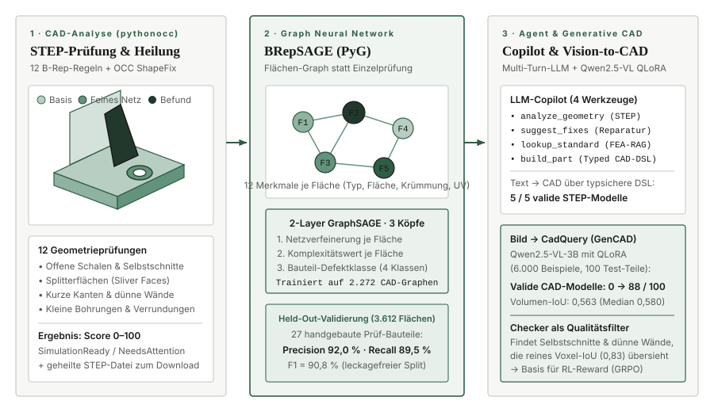

- Kontext
- Eigenes Projekt, öffentlich auf GitHub
- Zeitraum
- seit 03/2026
- Feld
- FEA-Vorverarbeitung
- Technologien
- PyTorch Geometric, pythonocc, LLM-Fine-Tuning, Streamlit
SimReady: von der STEP-Datei zum vernetzungsfähigen Bauteil
Vor jeder FE-Rechnung steht die Vorverarbeitung: Geometrie prüfen, Modell bereinigen, entscheiden, wo das Netz verfeinert werden muss. Pro Bauteil kostet das erfahrene Berechnungsingenieure schnell mehrere Stunden. Was dabei übersehen wird, fällt erst im Solver auf, oder gar nicht.
Zwölf Prüfungen und eine klare Aussage
SimReady liest eine STEP-Datei ein und führt zwölf Geometrieprüfungen aus, unter anderem auf scharfe Kanten, Kleinstflächen und Lücken in der Topologie. Am Ende steht eine belastbare Aussage: vernetzungsfähig oder nicht.

Jeder Befund wird im Chat begründet, die betroffenen Flächen werden farbig direkt am 3D-Modell markiert. Der Unterschied zu einer Prüfliste ist die Begründung: man sieht nicht nur, dass etwas auffällt, sondern warum es für die Vernetzung relevant ist.
Das Graph Neural Network
Der zweite Teil sagt voraus, welche CAD-Flächen eine Netzverfeinerung benötigen und welcher Fehlertyp vorliegt. Entscheidend ist der Kontext: jede Fläche wird zusammen mit ihren Nachbarflächen bewertet, so wie ein erfahrener Berechnungsingenieur ein Bauteil als Ganzes liest, nicht Fläche für Fläche.

Trainiert auf 1.100 selbst generierten Bauteilen
Der Trainingsdatensatz ist selbst erzeugt, weil es keinen öffentlichen gibt, der Flächen nach Verfeinerungsbedarf annotiert. Das war der aufwendigste Teil des Projekts.